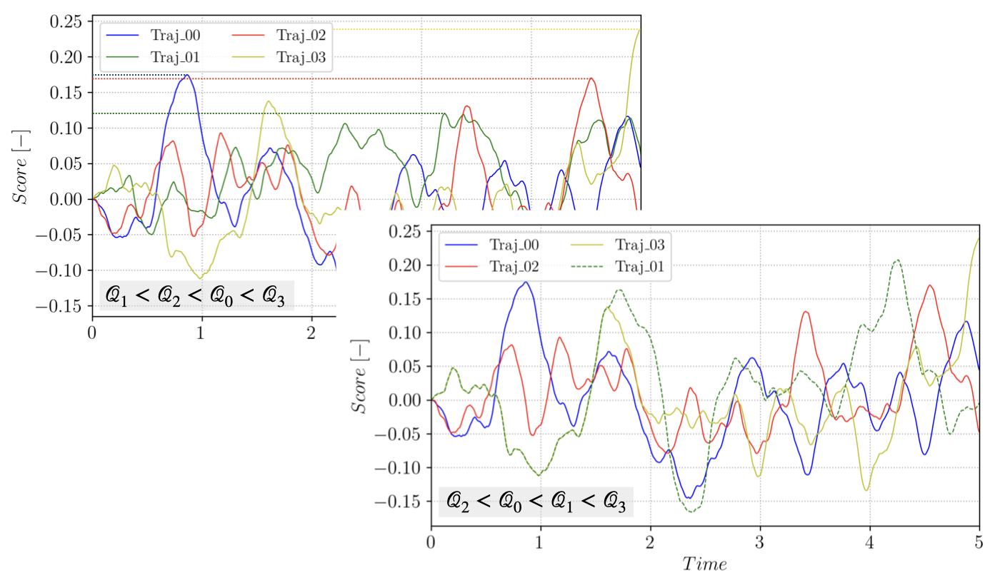

Theory¶
Introduction to TAMS¶
Trajectory-adaptive Multi-level Sampling (TAMS) is concerned with the simulation of rare events associated with a dynamical process. A rare event is an event with a non-zero, but very small probability. The probability is so low that naively sampling the stochastic process outcome with a Monte-Carlo (MC) approach yields no reliable estimate of the probability within a reasonable simulation time.
Let’s consider a random process \(X \in R^d\) and a measurable set \(Y\). We want to estimate the probability:
In a naive MC approach, we draw \(K\) i.i.d samples to get the estimate:
An analysis of the normalized variance of this method shows that the estimator is getting worse when \(p\) goes to zero, and \(K\) needs to be of the order of \(1/p\), becoming computationally too expensive for very small \(p\).
To construct a better estimate, we can use a variance reduction technique. TAMS belong to the family of Importance Splitting technique and is derived from Adaptive Multilevel Sampling (AMS) (see for instance the perspective on AMS by Cerou et al.). The idea behind AMS is to simulate following the original distribution (in contrast with Importance Sampling which changes the sampling distribution) and to iteratively discard trajectories that are going away from the measurable set \(Y\), while branching trajectories that are going towards \(Y\). Sorting the trajectories requires defining a score function \(\xi\) (or reaction coordinate due the initial development of the method within the molecular dynamics community). Using \(\xi\), it is possible to sort the trajectories based on the its maximum value:
considering that the trajectories of the random process \(X_i\) are sampled on the interval \([0, T_a]\). At each iteration \(j\) of TAMS, the \(l_j\) trajectories with the smallest value of \(\mathcal{Q}\), \(min (\mathcal{Q}_i) = \mathcal{Q}^*\), are discarded and new trajectories are branched from the remaining trajectories and advanced in time until they reach \(Y\) or until the maximum time \(T_a\) is reached. The process is illustrated on a small ensemble in the following figure:

Branching trajectory \(1\) from \(3\), starting after \(\xi(t, X_3(t)) > \mathcal{Q}^*\).¶
For each branching or cloning event, a trajectory \(\mathcal{T}_{rep}\) to branch from is selected at random in the \(N-l_j\) remaining trajectories of the pool (where \(N\) is the total number of trajectories in the initial pool). The branching time \(t_b\) along \(\mathcal{T}_{rep}\) is selected to ensure that the branched trajectory has a score function strictly higher that the discarded one:
This iterative process is repeated until all trajectories reached the measurable set \(Y\) or until a maximum number of iterations \(J\) is reached. TAMS associate to the trajectories forming the ensemble at step \(j\) a weight \(w_j\):
Note that \(w_0 = 1\). The final estimate of \(p\) is given by:
where \(N_{\in Y}^J\) is the number of trajectories that reached \(Y\) at step \(J\). In practice, we define the observable set \(Y\) as a threshold for the score function \(\xi\). TAMS only provides an estimate of \(p\) and the algorithm repeated several times in order to get a more accurate estimate, as well as a confidence interval. The choice of \(\xi\) is critical for the performance of the algorithm as well as the quality of the estimate.
An overview of the algorithm is provided hereafter:
Simulate \(N\) independent trajectories of the dynamical system between [0, \(T_a\)]
Set \(j = 0\) and \(w[0] = 1\)
while \(j < J\):
compute \(\mathcal{Q}_i\) for all \(i\) in [1, \(N\)] and sort
select the \(l_j\) smallest trajectories
for \(i\) in [1, \(l_j\)]:
select a trajectory \(\mathcal{T}_{rep}\) at random in the \(N-l_j\) remaining trajectories
branch from \(\mathcal{T}_{rep}\) at time \(t_b\) and advance \(\mathcal{T}_{i}\) until it reaches \(Y\) or \(T_a\)
set \(w[j] = (1 - l_j/N) \times w[j-1]\)
set \(j = j+1\)
if \(\mathcal{Q}_i > \xi_{max}\) for all \(i\) in [1, \(N\)]:
break
High-dimension considerations¶
Warning
TODO
Implementation¶
pyTAMS implements the TAMS algorithm while encapsulating all the model-specific functionalities into an Abstract Base Class (ABC). By decoupling the physics from the TAMS algorithm, it becomes easier to extend the algorithm to new physics.
In particular, pyTAMS aims at tackling computationally expensive stochastic models, such as high-dimensional dynamical systems appearing in climate modeling or fluid dynamics, which requires High Performance Computing (HPC) platform to be used. As such, pyTAMS can be less efficient than more simplistic implementations where pure Python physics model can be efficiently vectorized. The internals of pyTAMS relies on a hierarchy of classes to describe data structures, data storage, workers and eventually the algorithm.
The reader is refered to the API documentation for more details on the classes and functions introduced hereafter.
Data structures & storage¶
pyTAMS uses an Array-Of-Structs (AOS) data structure to represent trajectories.
The low-level data container is a snapshot, a dataclass gathering the instantaneous state
of the model at a given point, along with a time, a noise increment and a value of the score function.
Note that only the time and score are typed (both as float), while the type of the state and noise
are up to the model implementation.
A list of snapshots consistutes a trajectory, along with some metadata such as the start and
end times, the step size or the maximum score. The trajectory object instanciates the model, and
implements function to advance the model in time or branch a trajectory.
Finally, a list of trajectories is the central container for the TAMS’s database. The algorithm
writes, reads and accesses trajectories through the database which also contains TAMS algorithm’s data
such as splitting iterations weights and biases. The database can be instanciated independently
from a TAMS run in order to explore the database contents.
Workers & parallelism¶
The TAMS algorithm exposes parallellism in two places: during the generation of the initial pool of trajectories (line 1 in the highlighted algorithm above), and at each splitting iterations where more than one trajectory can be branched (the loop on line 6 in the highlighted algorithm).
Distribution of work is handled by a taskrunner object, which can have either a dask or
an asyncio backend. The runner will spawn several workers, picking up tasks submitted to the
runner. When using the dask runner with Slurm, the workers are spawned in individual Slurm
jobs.
Algorithm¶
Finally, the TAMS algorithm is implemented in the TAMS class. The instanciation of a TAMS
object requires a forward model type and a path to a TOML file to specify the various parameters.
A simple example: 2D double well¶
Let’s now look at a simple example of implementing a forward model for a 2D double well model.
In particular, we will cover the basis of the forward model API and the abstract methods
needed during the TAMS algorithm.
Note that the model is available in the tests/models.py module.
Let’s first import the necessary modules and define the model class:
from pytams.fmodel import ForwardModelBaseClass
class DoubleWellModel(ForwardModelBaseClass):
"""2D double well forward model.
V(x,y) = x^4/4 - x^2/2 + y^2
Associated SDE:
dX_t = -nabla V(X_t)dt + g(X_t)dW_t
with:
-nabla V(X_t) = [x - x^3, -2y]
With the 2 wells at [-1.0, 0.0] and [1.0, 0.0]
"""
The first abstract method to implement is the _init_model one. It is called by the base
ForwardModelBaseClass class and is responsible for initializing model-specific attributes:
def _init_model(self,
params: dict,
ioprefix: Optional[str] = None):
"""Override the template."""
self._state = self.init_condition()
self._noise_amplitude = params.get("model",{}).get("noise_amplitude",1.0)
self._rng = np.random.default_rng()
def init_condition(self):
"""Return the initial conditions."""
return np.array([-1.0, 0.0])
From the code snippet above, we see that the model state consist of the coordinates of
the particle in the 2D space. The _init_model method is called by the ForwardModelBaseClass
__init__ and is provided with the params dictionary read from the TOML file (see the
Usage section for more details).
We now need to define the _advance method responsible for advancing the
system for one stochastic step.
def _advance(self,
step: int,
time: float,
dt: float,
noise: Any,
need_end_state: bool) -> float:
"""Advance the particle in the 2D space."""
self._state = (
self._state + dt * self.__RHS(self._state) + self._noise_amplitude * self.__dW(dt, noise)
)
return dt
def __RHS(self, state):
"""Double well RHS function."""
return np.array([state[0] - state[0] ** 3, -2 * state[1]])
def __dW(self, dt, noise):
"""Stochastic forcing."""
return np.sqrt(dt) * noise
- A few precisions:
Note that the time step length
dtand the noise incrementnoiseare provided externally by theForwardModelBaseClassadvancemethod calling the_advancemethod. This is because the TAMS database keeps track of the noise history and can rely on that history to move the model forward instead of generating new noise (when the state stored in the database is subsampled for instance).Additionally, the function returns the actual time step length performed by the model. For complex model, the time step can be constrained by the physics of the model (e.g. CFL condition) and differ from the stochastic time step at which the model is advanced within TAMS. The model substeps might not exactly add up to the provided
dt, so TAMS will use the returneddtto keep track of the model time.Finally, the
need_end_stateboolean is used to determine whether the model needs to store the end state or not. This is not relevant here as we do not store the model state to disk, but for higher dimentional models, the model state can not be stored in memory and needs to be stored to disk. Even then, storing to disk at every step might be too expensive such that TAMS can be asked to subsample the state in the database (see the Usage section for more details) to reduce the storage cost.
We now need to define accessors to the model state:
def get_current_state(self):
"""Access the model state."""
return self._state
def set_current_state(self, state):
"""Set the model state."""
self._state = state
For the present model, these two functions are trivial. But for more complex models, the state might be a path to a file on disk, a dictionary, etc. In that case, more work might be required.
The next abstract method to implement is the make_noise one. It is called by the base
ForwardModelBaseClass class and is responsible for generating new noise:
def make_noise(self):
"""Make 2D normal noise."""
return self._rng.standard_normal(2)
Finally, we need to define the score function:
def score(self):
"""Normalized weighted distance between two wells."""
a = np.array([-1.0, 0.0])
b = np.array([1.0, 0.0])
vA = self._state - a
vB = self._state - b
da = np.sum(vA**2, axis=0)
db = np.sum(vB**2, axis=0)
f1 = 0.5
f2 = 1.0 - f1
return f1 - f1 * np.exp(-8 * da) + f2 * np.exp(-8 * db)